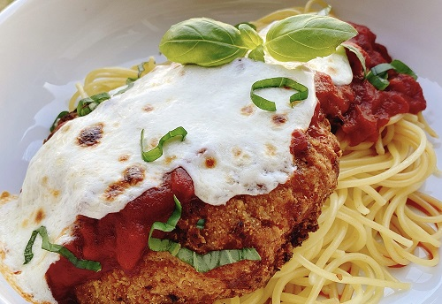

Parmesan Recipe

Chicken Parmesan
This chicken Parmesan starts out with frozen breaded chicken fillets. It only takes a handful of ingredients and dinner is ready in less than 30 minutes. Perfect for a college dorm meal if you only have an air fryer and a portable hot plate to cook on.
Ingredients
- 1 (8 ounce) package spaghetti
- ½ tablespoon salt
- 2 fully cooked breaded chicken fillets (such as Kirkwood®)
- ½ (8 ounce) can marinara sauce
- 1 (8 ounce) package fresh mozzarella cheese, sliced
- 1 tablespoon fresh basil, cut in very thin strips